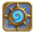

<!DOCTYPE html>
<head>
<meta charset="utf-8"/>
<link rel="stylesheet" href="css/style.css" type="text/css"/>
<!-- get jquery commit if yoe are using a cms -->
<script src="http://code.jquery.com/jquery.min.js"></script>
<script type="text/javascript">

// Add Channels to this array. Mutiple as ('channe1', 'channel2')
var channels = new Array('hndnisha');
jQuery(document).ready(function() {
	var updateStreams = function() {
		// empty divs for refresh
		jQuery("#streams").empty();
		// jQuery("#streamsoff").empty();

		jQuery.each(channels, function(index, value) {
			var url = 'https://api.twitch.tv/kraken/streams/'+ this +'?callback=?';

			jQuery.getJSON(url, function(s){
				// use to shorten game names
				function decodewow()
				{
					if (s.stream.game == "World of Warcraft: Mists of Pandaria"){
						return "World of Warcraft";
					}
					else
					{
						return s.stream.game;
					}
				}
				// online streams
				if (s.stream != null){
					// for debugging online streams
					alert(s.stream.game);
					var rows = '';
					var row = '<a href="http://www.twitch.tv/'+ value +'" target="_blank"><div class="streamlist"><div class="streamer">';
					// if logo is null, use a dummy
					if (s.stream.channel.logo == null){
						row += '';
					}
					else
					{
						row += '';
					}
					if (s.stream.game == "Hearthstone: Heroes of Warcraft"){
						row += ''; 
					}
					else if (s.stream.game == "StarCraft II: Heart of the Swarm"){
						row += '';
					}
					else if (s.stream.game == "Diablo III: Reaper of Souls"){
						row += '';
					}
					else if (s.stream.game == "World of Warcraft: Mists of Pandaria"){
						row += '';
					}
					else if (s.stream.game == "League of Legends"){
						row += '';
					}
					else if (s.stream.game == "WildStar"){
						row += '';
					}
					row += s.stream.channel.name;
					row += '</div>';
					row += '<div class="arrow"></div></br>';
					row += '<div class="desc"><b>Game:</b> ' + decodewow(s.stream.game) + '&nbsp;&nbsp;&nbsp;&nbsp;'+ s.stream.viewers + '</br>';
					row += s.stream.channel.status.substring(0, 45); + '</br>';
					row += '</div>';
					row += '</div></div></a>';
					rows += row;
					// add to div
					jQuery("#streams").append(rows);
				}
				// ---------------------------
				// Offline Streams ()
				// ---------------------------
				// if (s.stream == null){
				// 	var rows = '';
				// 	var row = '<a href="http://www.twitch.tv/'+ value +'" target="_blank"><div class="streamlist2"><div class="streamer">';
				// 	row += '<link rel="stylesheet" href="http://melktrupp-boosting.de/streams/css/style.css" type="text/css"/>';
				// 	// Name. I used value because JSON for this stream is NULL
				// 	row += value;
				// 	row += '</div>';
				// 	// offline pic
				// 	row += '<div class="offline"></div>'
				// 	row += '</div></div></a>';
				// 	rows += row;
				// 	// add to div
				// 	jQuery("#streamsoff").append(rows);
				// }
			});
		});
	}		
	jQuery("#btnRefresh").click(function(){updateStreams()});
	updateStreams();
});
</script>
</head>
	<body>
		<div id="streams"></div>
		<!-- <div id="streamsoff"></div> -->
		<div class="stbutton"><input id="btnRefresh" type="button" value="refresh"></div>
	</body>
</html>